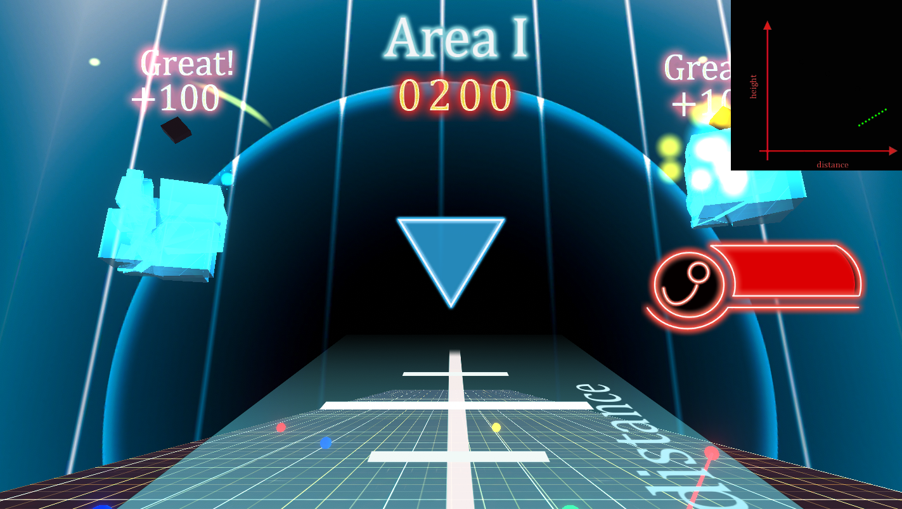
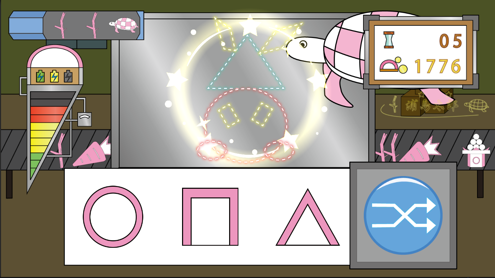
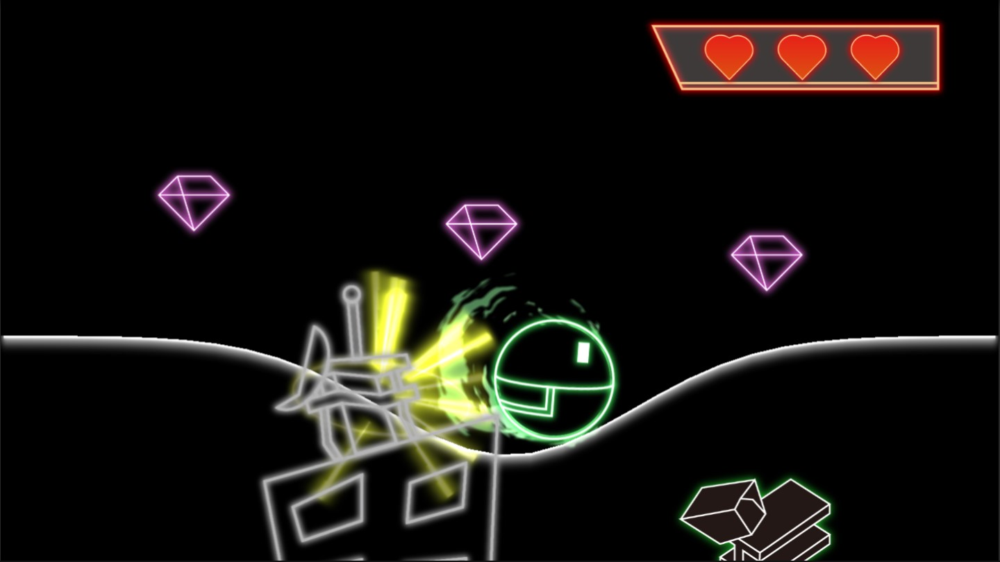

JAGA
機械系の人間です。
数値計算が好きでトポロジー最適化の研究室に入りましたが、現在は深層学習を用いた研究を行っています。
Games
現在は事情により、ストアでは非公開となっています。

Funcshot
初めて作ったスマホゲームです。
クオリティは散々ですが、Google Playにリリースできたことが大きかったと思います。

かまぼこ第２工場長
この作品を出した頃には少しイラストが描けるようになっていましたが、相変わらず素材作成に膨大な時間を取られていました。
ゲームのコンセプトを決めずに走り出してしまったことが悔やまれます。

grad U
Youtube広告で流れ始めた「線を引いて助けるゲーム」にインスピレーションを受け、作成したゲームです。
可能性は感じているため、アプデをしていきたいとは思っていますが・・・
ホームページについて
デザイン初心者ということもあり、何度も作っては壊してを繰り返しています。
今回はNext.jsを使ってみました。やはりフレームワークというだけあって、無理のない実装となるよう誘導してくれている気がしますね。共用サーバーをレンタルしているため、htmlとJavaScriptでエクスポートできる点もありがたいです。